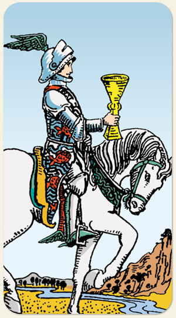

A proposta emocional, o idealismo e o convite. Ele representa um avanço suave, mas determinado, em direção aos sonhos e desejos do coração. É a carta do "mensageiro do amor" ou da inspiração artística, indicando alguém que age guiado pela intuição e pelos valores éticos e emocionais, muitas vezes agindo como um mediador ou um pacificador.
Traz bons sentimentos, é o Príncipe Encantado, benfeitores espirituais, anjos de guarda.
A proposta emocional, o idealismo e o convite. Ele representa um avanço suave, mas determinado, em direção aos sonhos e desejos do coração. É a carta do "mensageiro do amor" ou da inspiração artística, indicando alguém que age guiado pela intuição e pelos valores éticos e emocionais, muitas vezes agindo como um mediador ou um pacificador.
Positivo: Refrigério, boas novas, bebida doce, cura psiquiátrica, remédio, pessoa ligada à família, não esquecer-se de suas origens, pessoa que se devota ao cuidado do outro. É aquele que guarda as fotos de família.
Negativo: O movimento de odiar, querer ganhar o amor na marra, cobrar afeto, chantagem emocional, grudento magoado. É aquele que guarda as fotos de seus inimigos.
Símbolos: Cavalo Branco, Asas, Túnica, Peixes, Rio, Margens Áridas, Armadura, Elmo com Crista.
Cores: Azul, Amarelo, Vermelho, Branco.